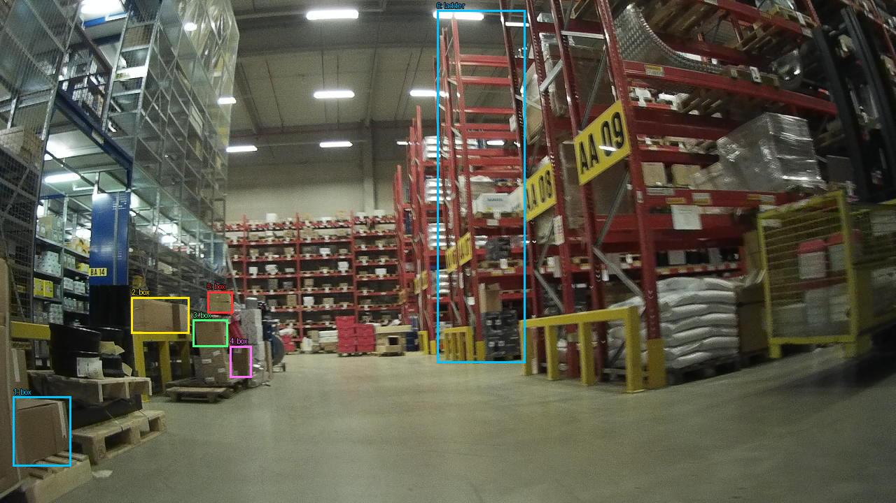

Prejšnji OD (shranjen)


Opis → phrase grounding (nov)

The image shows the interior of a large warehouse with multiple rows of shelves and racks. The shelves are filled with various items such as cardboard boxes, pallets, and other storage containers. The floor is made of concrete and the ceiling is high with overhead lights. On the right side of the image, there is a yellow forklift with a sign that reads "AA 09". The warehouse appears to be well-stocked and organized.

Original · Caption raw · Grounding raw · Koordinate
Številke so lokalni ID regije. Dolge slikovne oznake so skrajšane; spodaj so celotne fraze. Napovedane regije se lahko prekrivajo ali opisujejo skupine.
| ID | Celotna fraza | bbox xyxy |
|---|---|---|
| 1 | The shelves | [316.79998779296875, 298.44000244140625, 594.5599975585938, 507.2400207519531] |
| 2 | The floor | [64.63999938964844, 486.3600158691406, 1274.239990234375, 716.0400390625] |
| 3 | a yellow forklift | [735.3599853515625, 266.0400085449219, 1274.239990234375, 564.8400268554688] |
| 4 | a yellow forklift | [735.3599853515625, 431.6400146484375, 955.5199584960938, 566.280029296875] |
| 5 | a sign | [814.719970703125, 141.48001098632812, 904.3200073242188, 268.9200134277344] |
| 6 | The warehouse | [4.480000019073486, 4.680000305175781, 1272.9599609375, 713.8800048828125] |